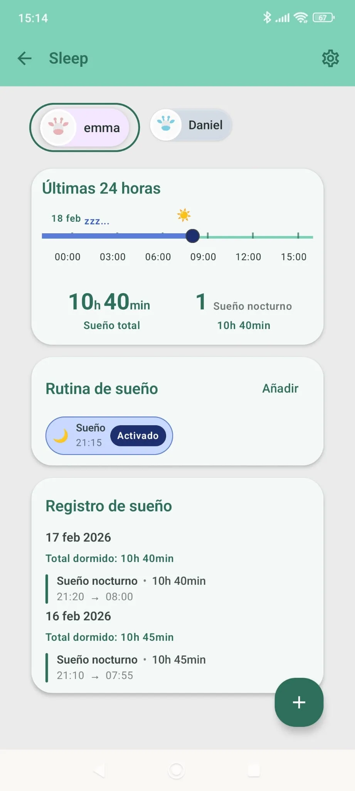

En esta página · 7 secciones
En pocas palabras
La mayoría de los niños pasan de la cuna a la cama entre los 18 meses y los 3 años. Si duerme bien y la cuna es segura, no hay prisa. La razón de más peso para hacer el cambio es que trepe o se caiga de la cuna, es decir, cuando la barandilla le queda baja para su altura. Evita hacerlo justo antes de la llegada de un hermano, una mudanza u otro cambio grande.
Señales de que ya toca
- Trepa o se cae de la cuna. Es la señal más importante: cuando un niño es capaz de salir solo de la cuna, puede ser el momento de pasar a una cama.
- Ya no cabe con comodidad. Si la cuna se le ha quedado pequeña y duerme encogido o incómodo, el cambio tiene sentido.
- Empieza a controlar la noche sin pañal. Si estáis dejando el pañal por la noche, una cama a la que pueda subir y bajar solo le facilita ir al baño.
La edad por sí sola es una mala razón para cambiar: si duerme bien y no intenta salir, la cuna sigue siendo un sitio seguro y puedes esperar.
Mira cómo cambian sus noches
Registra el sueño en Raffy, con recordatorios y diario, y comprueba cómo evolucionan las noches durante la transición.

Cuándo es mejor esperar
- Si va a llegar un hermano: no lo cambies de cama justo antes, para que no lo viva como que el bebé le quita el sitio. Mejor hacerlo con margen o dejarlo para después.
- Si estáis a punto de mudaros, o de estrenar habitación o guardería.
- Si hay otro cambio grande en casa: es mejor no sumar uno más.
Si el cambio es por seguridad porque ya trepa, no esperes: la prioridad es evitar que se caiga, y puedes dejar el colchón de la cuna en el suelo mientras llega la cama (ver más abajo).
Qué cama elegir
- Cama baja con barrera. Da sensación de límite y se parece a lo que ya conoce.
- Colchón en el suelo (cama montessori). Reduce el riesgo de caída y le da libertad para levantarse; exige una habitación muy bien preparada, porque el niño podrá moverse por ella.
- Cuna convertible. Mantiene un entorno conocido y suele salir rentable, pero hay que haberla elegido desde el principio.
Cómo hacer el cambio
- Implícalo: que elija las sábanas o un peluche para su cama nueva.
- Mantén la misma rutina antes de dormir (baño, cuento, luz tenue) y a la misma hora; la rutina previa al sueño debería terminar en su cama.
- Si puedes, coloca la cama en el mismo sitio de la habitación donde estaba la cuna.
- Pon una puerta de seguridad en la puerta del dormitorio, para que pueda moverse por la habitación pero no deambule por la casa de noche.
- Si se levanta de noche, llévalo de vuelta a la cama con calma y pocas palabras. No lo premies dejándole venir a la vuestra.
- Cuenta con que al principio cueste más acostarlo o haya más despertares: es una regresión normal.
Pasar a la cama y pasar a su propia habitación son decisiones distintas: puedes hacer una sin la otra. Si necesitas ordenar también las siestas y la hora de acostarse, mira la rutina de sueño del bebé por edad.
Seguridad en la habitación
Seguridad pediátrica
- Si trepa, no esperes a la cama nueva: coloca el colchón de la cuna en el suelo mientras tanto.
- Despeja la zona de muebles y juguetes grandes con los que pueda golpearse si se cae.
- Ancla al muro cómodas, estanterías y otros muebles que puedan volcar si el niño trepa por ellos, y pon cierres en los cajones para que no los use de escalón.
- Usa una puerta de seguridad en el dormitorio y otra en lo alto de la escalera si la hay.
- Usa cortinas y persianas sin cordón; si tienen cordones, acórtalos o déjalos fuera de su alcance.
- Cubre los enchufes con protectores que el niño no pueda quitar con facilidad.
- Si la cama queda junto a una ventana, esta debe tener cierres o seguros.
- En menores de un año, nada de almohadas ni ropa de cama voluminosa; por eso, no hagas el cambio antes de tiempo.
- Si los problemas de sueño se alargan tras el cambio, coméntalo con el pediatra.
Preguntas frecuentes
¿A qué edad hay que pasar al niño de la cuna a la cama?
No hay una edad exacta. La mayoría de los niños hacen el cambio entre los 18 meses y los 3 años. Lo que cuenta es la seguridad y cómo duerme: si se escapa o ya no cabe, toca cambiar; si duerme bien y no trepa, puedes esperar.
¿Pasar al niño a la cama a los 18 meses es demasiado pronto?
Está dentro del margen habitual, pero no es obligatorio. Si a esa edad duerme bien en la cuna y no intenta salir, no hay prisa. Si trepa, la prioridad es la seguridad y conviene hacer el cambio.
¿Es mejor una cama con barrera, un colchón en el suelo o una cuna convertible?
Las tres sirven. La cama baja con barrera da sensación de límite; el colchón en el suelo reduce el riesgo de caída pero requiere una habitación segura; la cuna convertible mantiene el mismo entorno, pero hay que comprarla antes. Elige la que encaje con vuestra habitación y presupuesto.
¿Qué hago si se levanta de la cama por la noche?
Devuélvelo a la cama con calma, con pocas palabras y sin encender luces fuertes. Mantén la misma rutina y evita premiar la escapada, por ejemplo dejándole dormir en vuestra cama. Suele costar varias noches seguidas.
¿Es normal que duerma peor después del cambio?
Sí. Es habitual que al principio cueste más acostarlo o haya más despertares. Si los problemas de sueño se prolongan o te preocupan, coméntalo con su pediatra.
¿Pasar a la cama es lo mismo que pasar a su propia habitación?
No. Son dos decisiones distintas. Puedes cambiar de cuna a cama en la misma habitación en la que ya dormía, y hacer el cambio de habitación en otro momento.
Fuentes
- American Academy of Pediatrics · HealthyChildren.orgBig Kid Beds: When to Switch From a Crib (en inglés)
- NHS · Cambridgeshire and Peterborough Children’s HealthKeeping your sleeping baby safe (en inglés)
- Asociación Española de Pediatría · En FamiliaHábitos saludables de sueño: higiene de sueño
- U.S. Consumer Product Safety Commission (CPSC)Anchor It! Campaña contra los vuelcos de muebles y televisores (en inglés)
- U.S. Consumer Product Safety Commission (CPSC)Childproofing Your Home (en inglés)
Revisamos este artículo con estas fuentes el 26 nov 2026. Es contenido educativo, no consejo médico. Política editorial